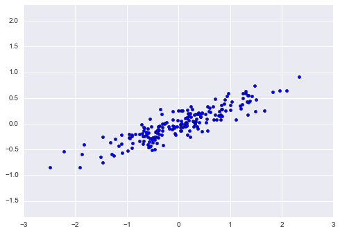

name: title class: center, middle # Machine Learning: .di-orange[Data Foundations<br>+ Algorithms & Applications] # .di-orange[Day 5] --- layout: false .left-column[ ## Agenda - Day 5 ] .right-column[ - Dimensionality Reduction - Date and Time-Handling - Model Evaluation - Performance - Product-based Exercise ] ??? # Key Points: - Dimensionality - PCA or principal component analysis - Date/Time - Pandas support for date time is really nice. - We will do a mini-feature engineering activity and take some time stamps and temperatures and create features. - ? What labels would be useful to create? __timezones, month, mean temp for that month__ - look for a way to determine if it is the weekend or not - Model Evaluation: - More formal ways of evaluating models like Mean Squares Error - Hyperparameter searches - Performance: More informative overview - Contextual & what's going on in the industry - Product Based Excercise: Salesƒorce Data - TODO Add a slide to review & walk through the closing Day 2 excercise (Decision trees & random forest) - TODO Add a slide for review of Day 1 & Day 2 ? --- name: dimensionality-reduction class: center, middle, di-style # Dimensionality Reduction ??? Harry Potter and the curse of Dimensionality joke... # Question: - What is dimensionality reduction? - Why do we want to / need to reduce dimensions? --- # Dimensionality Reduction * Consider the following 3-D data: most of the variation lies in the x1 and x2 dimensions, with a small amount in x3 .center[ .footnote["Hands-On Machine Learning With SciKit-Learn and Tensorflow"] ] ??? # Key Points: - How many dimensions? __3__ - What can we say? __clustered together on a plane__ - But the plane is angled ... __we can't just ignore the Z dimension__ - Dimensionality reduction is trying to reduce the data down to 2 dimensions - If it were really flat, it would be like having lat and long and ignoring altitude (z) - Project it down into 2 dimensions... --- # Dimensionality Reduction (cont'd) * we project the 3-dimensional data onto 2 new dimensions, the ones which preserve the majority of the variance * notice the axes...we did not just throw away a dimension .center[ .footnote["Hands-On Machine Learning With SciKit-Learn and Tensorflow"] ] ??? # Key Points: - Do we lose some data? __yes__ - Do we lose all the data? __no, we preserve the overall meaning of the data__ - We have reduced dimensionality - smaller storage, simpler model - Q: Is everone ok with that short mental leap - reducing a dimension and losing a little data? - Not a direct mapping of data - Data is transformed - units are not quite the same either - they aren't the same unit after transform - z1/z2 vs. x1/x2/x3 --- class: center, middle .footnote["Hands-On Machine Learning With SciKit-Learn and Tensorflow"] ??? # Key Points: - Swiss Roll dataset - Easy for the first data set, not super easy with something like this - No clear planes we can put in, etc. - How would we go about doing this for this swiss roll? - What does the decision boundary look like? - unroll the swiss roll will preserve most of the data variance - visually we can see unrolling it would preserve most data variance / little loss - There is no single way to transform down data. - it depends on the data. - Right tool for the right job --- class: center, middle .footnote["Hands-On Machine Learning With SciKit-Learn and Tensorflow"] ??? - Two Swiss rolls opened up - Reduce one dimension but preserve most of the variance. --- class: center, middle .footnote["Hands-On Machine Learning With SciKit-Learn and Tensorflow"] ??? - Question: Looking at them unrolled, what can we say about the data? - there is a linear trend. most of the growth a function of the slope so find the slope. --- # Principal Component Analysis (PCA) * find vectors (or principal components) that capture variation in the data * sort them in descending order of how much variance they capture .center[ .footnote["Hands-On Machine Learning With SciKit-Learn and Tensorflow"] ] ??? # Key Points: - Some principal component(s) (vectors) can explain much of the data variance - Look at C1 line - Pretty linear - Linear regression. - Where is most of the variance occurring? - What vector maximizes our understanding the data set? __C1__ - Go from 2 dimensions to 1 dimension - the slope of the line explains most of the variance - we lost some data, but still looks kind of like our dataset - Where is the rest of the variance occuring? - What additional vector captures much of the rest of the data variance? __C2__ - Can start to imagine how different choices change our understanding of the data. - Represent multi dimensional data as a combination of vectors (linear algebra) - We will lose some data always, it is just a matter of how much - Think if the Iris dataset: - Petal length gave us the most information. That relationship captured a signifigant portion of the variance. - Sepal width didn't give us much info, so we threw it away (we didn't do PCA) --- # Reduce Dimensionality * How many principal components do we need to keep in order to have a reasonable approximation of original data? * Or...how much of the variance in the data do we need to capture...95%? .center[ .footnote["Hands-On Machine Learning With SciKit-Learn and Tensorflow"] ] ??? # Key Points: - Explained variance vs. The number of dimensions - Set a threshold of explained variance: - On this graph, at one dimension, we maintain just 20% of the data (we have lost too much information) - The dotted lines show about 95% data capture but at a cost of >150 dimensions - To reduce dimensionality, we can generate a curve like this & compute how many dimensions we need. - Question: About how many dimensions do we need to capture about 80% of the variance captured? - This diagram helps you to define how many dimensions are "good enough" - Variance capture vs number of features trade-off --- name: Demo1 class: center, middle, di-style # Demo: .di-orange[Principal Component Analysis] --- # Principal Component Analysis * there are screenshots in this presentation to maintain continuity, but let's open the notebook named __`Demo - Principal Component Analysis.ipynb`__ and go through it together * when done, click <a href="#exercise-pca">here</a> to skip screenshots --- # Principal Component Analysis Example ```python In [1]: import numpy as np ...: import matplotlib.pyplot as plt In [2]: rng = np.random.RandomState(1) ...: X = np.dot(rng.rand(2, 2), rng.randn(2, 200)).T ...: plt.scatter(X[:, 0], X[:, 1]) ...: plt.axis('equal'); ``` ??? -- .center[] ??? # Key Points: - gen 2 random data sets - Looks like there is some linearity here - turn this into 1 dimension, using vectors --- ```python In [3]: from sklearn.decomposition import PCA ...: pca = PCA(n_components=2) ...: pca.fit(X) ...: Out[3]: PCA(copy=True, iterated_power='auto', n_components=2, random_state=None, svd_solver='auto', tol=0.0, whiten=False) In [4]: pca.components_ Out[4]: array([[-0.94446029, -0.32862557], [-0.32862557, 0.94446029]]) In [5]: pca.explained_variance_ Out[5]: array([ 0.75871884, 0.01838551]) ``` ??? # Key Points: - Import scikit learn decomposition package from PCA - fun linear algebra packaged up in a library - n_components in PCA is the target number of dimensions (tryig to get to 2) - builds two vectors - vectors explain ~78% of the variance explained total - loss happens - converting from 2 dimensions --> 2 dimensions doesn't really help us that much --- ```python def draw_vector(v0, v1, ax=None): ax = ax or plt.gca() arrowprops=dict(arrowstyle='->', linewidth=2, shrinkA=0, shrinkB=0) ax.annotate('', v1, v0, arrowprops=arrowprops) # plot data plt.scatter(X[:, 0], X[:, 1], alpha=0.2) for length, vector in zip(pca.explained_variance_, pca.components_): v = vector * 3 * np.sqrt(length) draw_vector(pca.mean_, pca.mean_ + v) plt.axis('equal'); ``` ??? # Key Points: - Transform and render the vectors - PCA - Does Analysis - Transforms data into lower-dimensional space - Tries to maintain as much data variance while doing so -- .center[<img style="height: 300px;" src="images/pca-line-2.png">] --- class: center, middle <img style="height: 250px;" src="images/pca-line-3.png"> ??? # Key Points: - Can see both vectors in 2D space --- ```python In [7]: pca = PCA(n_components=1) ...: pca.fit(X) ...: X_pca = pca.transform(X) ...: In [8]: X.shape Out[8]: (200, 2) In [9]: X_pca.shape Out[9]: (200, 1) ``` --- ```python X_new = pca.inverse_transform(X_pca) plt.scatter(X[:, 0], X[:, 1], alpha=0.2) plt.scatter(X_new[:, 0], X_new[:, 1], alpha=0.8) plt.axis('equal'); ``` ??? # Key Points: - Do a one-dimention PCA - Decent approximation with just one dimension (with loss) -- .center[<img style="height: 400px;" src="images/pca-line-4.png">] --- # PCA Example - Iris Data Set ```python # Code source: Gaël Varoquaux # License: BSD 3 clause import numpy as np import matplotlib.pyplot as plt from mpl_toolkits.mplot3d import Axes3D from sklearn import decomposition from sklearn import datasets np.random.seed(5) centers = [[1, 1], [-1, -1], [1, -1]] iris = datasets.load_iris() X = iris.data y = iris.target ``` --- ```python In [18]: iris.data Out[18]: array([[ 5.1, 3.5, 1.4, 0.2], [ 4.9, 3. , 1.4, 0.2], [ 4.7, 3.2, 1.3, 0.2], [ 4.6, 3.1, 1.5, 0.2], [ 5. , 3.6, 1.4, 0.2], [ 5.4, 3.9, 1.7, 0.4], [ 4.6, 3.4, 1.4, 0.3], [ 5. , 3.4, 1.5, 0.2], [ 4.4, 2.9, 1.4, 0.2], [ 4.9, 3.1, 1.5, 0.1], [ 5.4, 3.7, 1.5, 0.2], [ 4.8, 3.4, 1.6, 0.2], ... ``` --- class: center, middle .footnote[CC BY 4.0, [Nicoguaro](https://commons.wikimedia.org/w/index.php?curid=46257808)] ??? # Key Points: - Scatter plot - we can visually look for components that are important or less important. - With PCA, we can quantitatively to identify the principal (high variance) components / features. - Let's do that next. --- # Transform the Data ```python fig = plt.figure(1, figsize=(4, 3)) plt.clf() ax = Axes3D(fig, rect=[0, 0, .95, 1], elev=48, azim=134) plt.cla() pca = decomposition.PCA(n_components=3) pca.fit(X) X = pca.transform(X) ``` ??? - Build a PCA instance with 3 components (instead of 4 - transform 4 to 3) - Fit the data - With unsupervised learning, use __transform()__ instead of __predict()__ -- ```python In [11]: pca.explained_variance_ratio_ Out[11]: array([ 0.92461621, 0.05301557, 0.01718514]) ``` ??? - Explained variance breakdown - 1st % - petal length - 2nd % - petal width - 3rd % - sepal length -- ```python In [12]: sum(pca.explained_variance_ratio_) Out[12]: 0.99481691454981003 ``` ??? - 3 dimensions explains 99%+ of the variance. - A better more direct way than using the scatter plot. - Question: Questions? --- # Plot the Data ```python for name, label in [('Setosa', 0), ('Versicolour', 1), ('Virginica', 2)]: ax.text3D(X[y == label, 0].mean(), X[y == label, 1].mean() + 1.5, X[y == label, 2].mean(), name, horizontalalignment='center', bbox=dict(alpha=.5, edgecolor='w', facecolor='w')) # Reorder the labels to have colors matching the cluster results y = np.choose(y, [1, 2, 0]).astype(np.float) ax.scatter(X[:, 0], X[:, 1], X[:, 2], c=y, cmap=plt.cm.spectral, edgecolor='k') ax.w_xaxis.set_ticklabels([]) ax.w_yaxis.set_ticklabels([]) ax.w_zaxis.set_ticklabels([]) plt.show() ``` ??? - Generates graph --- class: center, middle ??? - Also, with only 3 dimensions - easier to represent in a graph - Harder to explain because the units are no longer what they used to be. - We are past the beginner ML pieces here - this is green-belt kind of stuff. --- # Number of Dimensions to Capture Variance ```python In [13]: cumsum = np.cumsum(pca.explained_variance_ratio_) In [14]: d = np.argmax(cumsum >= 0.95) + 1 In [15]: d Out[15]: 2 ``` ??? - Working How many dimensions do we need to capture 95% of the variance? --- # PCA Example - Digits ```python In [1]: from sklearn.datasets import load_digits ...: digits = load_digits() ...: digits.data.shape Out[1]: (1797, 64) ``` ??? - Dataset of handwritten digits ships with sklearn. - 1797 samples with 64 dimensions - Why 64 dimensions? __numbers are 8x8 pixels__ - We are trying to train which pixels are more important than others? - Whiteboard a number & look at pixels - upper left corner pixel - never used, so less significant - middle pixels used a lot - more significant - TODO show a picture of a number w/ 64 dimensions so we know what we are talking about -- ```python In [3]: import numpy as np ...: import matplotlib.pyplot as plt ...: from sklearn.decomposition import PCA ``` ??? - Let's setup our imports .... -- ```python In [6]: pca = PCA(2) # project from 64 to 2 dimensions ...: projected = pca.fit_transform(digits.data) ``` -- ```python In [10]: digits.data.shape Out[10]: (1797, 64) In [11]: projected.shape Out[11]: (1797, 2) ``` ??? - project this down to 2 dimensions - Question: How much data is lost here? __ probably a lot __ - we didn't throw out data, we just transformed it down to 2 dim. --- # Plot the Data ```python In [12]: plt.scatter(projected[:, 0], projected[:, 1], ...: c=digits.target, edgecolor='none', alpha=0.5, ...: cmap=plt.cm.get_cmap('spectral', 10)) ...: plt.xlabel('component 1') ...: plt.ylabel('component 2') ...: plt.colorbar(); ``` -- .center[] ??? - Color here is original digit - The colors cluster still - Maybe black is zero - Maybe blue is ones, etc. - This is where trying to interpret this is a fast trip to madness.! --- ### `$$ x = [x_1, x_2, x_3, ... , x_{64}] $$` ??? - Representation of original 64 pixels -- ### `$$ image(x) = x_1 \cdot p_1 + x_2 \cdot p_2 + ... + x_{64} \cdot p_{64} $$` ??? - Imagine a way to represent the image by finding a vector that represents the pixels in some way. -- .center[<img style="height: 125px; margin-top: 50px;" src="images/pca-digits-2.png">] ??? - Take the first 8 pixes in original and encode pixel values into color - Multiply pixel being there or not being there times the color. - Direct pixel color and position just won't compress any further. --- #### `$$ image(x) = mean + x_1 \cdot b_1 + x_2 \cdot b_2 + ... + x_{64} \cdot b_{64} $$` ??? - Some value * a collection of coefficents -- .center[<img style="height: 125px; margin-top: 50px;" src="images/pca-digits-3.png">] ??? - No longer representing all 64 bits. - Building a vector of numbers based on some formula can represent the data. - We capture some elements of the roundyness of a zero or up-downness of a 1 or 7 - This is not intuitive / is hard to reason about. --- ```python In [13]: pca = PCA().fit(digits.data) ...: plt.plot(np.cumsum(pca.explained_variance_ratio_)) ...: plt.xlabel('number of components') ...: plt.ylabel('cumulative explained variance'); ``` -- .center[<img style="height: 400px;" src="images/pca-digits-4.png">] ??? - Do the PCA fit - Generate a variance / component curve - If I want X variation, I need Y components - for this / my dataset - Now I can make intelligent decisions about # of dimensions to capture variance --- ```python In [14]: def plot_digits(data): ...: fig, axes = plt.subplots(4, 10, figsize=(10, 4), ...: subplot_kw={'xticks':[], 'yticks':[]}, ...: gridspec_kw=dict(hspace=0.1, wspace=0.1)) ...: for i, ax in enumerate(axes.flat): ...: ax.imshow(data[i].reshape(8, 8), ...: cmap='binary', interpolation='nearest', ...: clim=(0, 16)) ...: plot_digits(digits.data) ``` -- .center[] ??? - Can plot out some of the samples based on this using __imshow()__ --- ```python In [15]: np.random.seed(42) ...: noisy = np.random.normal(digits.data, 4) ...: plot_digits(noisy) ``` -- .center[] ??? - Introducing noise with a random function. - Question: What does that do to my edge detection algorithms, etc? __ messes them up __ - Question: Any thoughts on what we could do to fix this? - We can do a PCA analysis of the noisy data & find the --- ```python In [16]: pca = PCA(0.50).fit(noisy) ...: pca.n_components_ ...: Out[16]: 12 ``` ??? - Take the noisy data and fit it. 50% of variance - Generate 12 components. -- ```python In [17]: components = pca.transform(noisy) ...: filtered = pca.inverse_transform(components) ...: plot_digits(filtered) ``` ??? - Reverse those 12 compoents back through the PCA transformation. - We have filtered out much of the noise. -- .center[] ??? - This is like squinting (with your eyes) at the pictures - we lose a lot of the noise - we see the pattern --- # PCA Example - Faces ```python In [1]: from sklearn.datasets import fetch_lfw_people In [2]: faces = fetch_lfw_people(min_faces_per_person=60) In [3]: faces.target_names Out[3]: array(['Ariel Sharon', 'Colin Powell', 'Donald Rumsfeld', 'George W Bush', 'Gerhard Schroeder', 'Hugo Chavez', 'Junichiro Koizumi', 'Tony Blair'], dtype='|S17') In [5]: faces.images.shape Out[5]: (1348, 62, 47) ``` ??? - Known dataset - pictures of famous people - Multiple samples of each person -- ```python In [6]: from sklearn.decomposition import RandomizedPCA ...: pca = RandomizedPCA(150) ...: pca.fit(faces.data) Out[6]: RandomizedPCA(copy=True, iterated_power=2, n_components=150, random_state=None, whiten=False) ``` ??? - Create a different PCA implementation (Randomized PCA) - works better for this kind of data --- ```python In [8]: import matplotlib.pyplot as plt In [9]: fig, axes = plt.subplots(3, 8, figsize=(9, 4), ...: subplot_kw={'xticks':[], 'yticks':[]}, ...: gridspec_kw=dict(hspace=0.1, wspace=0.1)) ...: for i, ax in enumerate(axes.flat): ...: ax.imshow(pca.components_[i].reshape(62, 47), cmap='bone') ``` -- .center[] ??? - render the images - the reduced rendering of the images post-PCA --- ```python In [11]: import numpy as np In [12]: plt.plot(np.cumsum(pca.explained_variance_ratio_)) ...: plt.xlabel('number of components') ...: plt.ylabel('cumulative explained variance'); ``` -- .center[<img style="height: 450px;" src="images/pca-faces.png">] ??? - We only need about 80 components to explain about 90% of variance. - Consider the storage used by all those images.... - Converting 150 dimensions to 80 dimenssions - That's a lot smaller footprint on disk. --- ```python In [13]: pca = RandomizedPCA(150).fit(faces.data) ...: components = pca.transform(faces.data) ...: projected = pca.inverse_transform(components) In [14]: fig, ax = plt.subplots(2, 10, figsize=(10, 2.5), ...: subplot_kw={'xticks':[], 'yticks':[]}, ...: gridspec_kw=dict(hspace=0.1, wspace=0.1)) ...: for i in range(10): ...: ax[0, i].imshow(faces.data[i].reshape(62, 47), cmap='binary_r') ...: ax[1, i].imshow(projected[i].reshape(62, 47), cmap='binary_r') ...: ...: ax[0, 0].set_ylabel('full-dim\ninput') ...: ax[1, 0].set_ylabel('150-dim\nreconstruction'); ``` ??? - Let's reverse the process -- .center[] ??? - Compare the original dataset with the reduced ones - you can see how similar they are --- name: exercise-pca class: center, middle, di-style # Exercise: .di-orange[Principal Component Analysis] (open the notebook named __`Exercise 14 - Principal Component Analysis.ipynb`__) --- name: Demo2 class: center, middle, di-style # Demo: .di-orange[Date and Time Handling] --- # Date and Time Handling * there are screenshots in this presentation to maintain continuity, but let's open the notebook named __`Demo - Date and Time Handling.ipynb`__ and go through it together * when done, click <a href="#exercise-dates">here</a> to skip screenshots ??? - And now for something completely different (break up your day a bit) --- class: center, middle, compact | Type | Description | |-----------|---------------------------------------------------------------------| | date | Store calendar date (year, month, day) using the Gregorian calendar | | time | Store time of day as hours, minutes, seconds and microseconds | | datetime | Store date and time | | timedelta | Store the difference between two datetimes | | tzinfo | Store time zone information | ??? - some of these are plain python / some pandas - Timezones are hard - Steven Hawking "how old is he" story on day he died. --- # Datetime and timedelta ```python >>> from datetime import datetime >>> now = datetime.now() >>> now datetime.datetime(2018, 2, 18, 20, 33, 4, 108848) ``` -- ```python >>> now.year, now.month, now.day (2018, 2, 18) ``` ??? - Day of the month / weekend could be usefull - Month of the year could be interesting for temperature, etc. -- ```python >>> delta = datetime(2018, 6, 14) - datetime(2003, 6, 14) >>> delta datetime.timedelta(5479) ``` -- ```python >>> delta.days, delta.seconds (5479, 0) ``` ??? - you can delta on years, days, hours, minutes, seconds, etc. -- ```python >>> from datetime import timedelta >>> datetime.now() + timedelta(12) datetime.datetime(2018, 3, 20, 20, 39, 7, 552783) ``` ??? - Delta can be used for time arithmetic - add 12 hours, etc. --- # Converting to/from strings ```python >>> str(datetime(2018, 2, 18)) '2018-02-18 00:00:00' ``` ??? - Simple formats for logging as your logs are a datasource -- ```python >>> datetime(2018, 2, 18).strftime('%Y-%m-%d') '2018-02-18' ``` ??? - Convert a string into a datetime if you specify a format mask - small date/time format language like many programming languages have -- ```python >>> datetime.strptime('2018-02-18', '%Y-%m-%d') datetime.datetime(2018, 2, 18, 0, 0) ``` --- class: center, middle, compact | Type | Description | |-------|------------------| | %Y | Four-digit year | | %y | Two-digit year | | %m | Two-digit month | | %d | Two-digit day | | %H | Hour (24-hour) | | %I | Hour (12-hour) | | %M | Two-digit minute | | %S | Seconds | | %w | Weekday | | %z | UTC TZ offset | | %F | %Y-%m-%d | | %D | %m/%d/%y | --- # Parser ```python >>> from dateutil.parser import parse >>> parse('2018-02-18') datetime.datetime(2018, 2, 18, 0, 0) ``` ??? - __dateutil.parser__ does a nice job of parsing common string formats -- ```python >>> parse('2/12/2018') datetime.datetime(2018, 2, 12, 0, 0) ``` ??? - Question: What could be a problem here? __ order of fields like in europe it's year-month-day__ -- ```python >>> parse('2/12/2018', dayfirst=True) datetime.datetime(2018, 12, 2, 0, 0) ``` --- # Pandas Date Handling ```python >>> import pandas as pd >>> dates = ['2018-02-18 12:00:00', '2018-02-05 14:30:00', '2018-03-09 17:35:00'] >>> pd.to_datetime(dates) DatetimeIndex(['2018-02-18 12:00:00', '2018-02-05 14:30:00', '2018-03-09 17:35:00'], dtype='datetime64[ns]', freq=None) ``` ??? - What is happening here? - What is nice about having Pandas parse the dates? __dates become part of a DateTimeIndex__ - Useful for ranges, etc. -- ```python >>> date_idx = pd.to_datetime(dates + [None]) >>> date_idx DatetimeIndex(['2018-02-18 12:00:00', '2018-02-05 14:30:00', '2018-03-09 17:35:00', 'NaT'], dtype='datetime64[ns]', freq=None) ``` -- ```python >>> pd.isnull(date_idx) array([False, False, False, True], dtype=bool) ``` ??? - IsNull check is handy - Very similar to other Pandas API features we have seen before --- # Date ranges ```python >>> index=pd.date_range('2/18/2018', periods=1000) >>> index DatetimeIndex(['2018-02-18', '2018-02-19', '2018-02-20', '2018-02-21', '2018-02-22', '2018-02-23', '2018-02-24', '2018-02-25', '2018-02-26', '2018-02-27', ... '2020-11-04', '2020-11-05', '2020-11-06', '2020-11-07', '2020-11-08', '2020-11-09', '2020-11-10', '2020-11-11', '2020-11-12', '2020-11-13'], dtype='datetime64[ns]', length=1000, freq='D') ``` ??? - Build the dates for the next 1000 days - How much saving of hassle is that? __all the date hassle__ - More likely - you need a range for the next 30 days or next 90 days -- ```python >>> len(index) 1000 ``` -- ```python >>> index[:20:2] DatetimeIndex(['2018-02-18', '2018-02-20', '2018-02-22', '2018-02-24', '2018-02-26', '2018-02-28', '2018-03-02', '2018-03-04', '2018-03-06', '2018-03-08'], dtype='datetime64[ns]', freq='2D') ``` ??? - Just slice what you need - Give me every other day for the next 20 days - Range for the next 30 days or next 90 days or whatever is required --- ```python >>> import numpy as np >>> dates = pd.Series(np.random.random(1000), index=index) ``` -- ```python >>> dates['2018/03/15':'2018/03/20'] 2018-03-15 0.599067 2018-03-16 0.808155 2018-03-17 0.988099 2018-03-18 0.982365 2018-03-19 0.755831 2018-03-20 0.035025 Freq: D, dtype: float64 ``` ??? - can use date as an index now, can slice by date, etc. --- #Offsets ```python >>> from pandas.tseries.offsets import Day, MonthEnd >>> now datetime.datetime(2018, 2, 18, 0, 0) ``` ??? - Often used to cleanup a time period. - Could use as a timer - user started at time X, at X + offset, log them off -- ```python >>> now + 6 * Day() Timestamp('2018-02-24 00:00:00') ``` -- ```python >>> now + MonthEnd() Timestamp('2018-02-28 00:00:00') ``` -- ```python >>> now + MonthEnd(3) Timestamp('2018-04-30 00:00:00') ``` --- name: exercise-dates class: center, middle, di-style # Exercise: .di-orange[Feature Engineering Dates] (open the notebook named __`Exercise 15 - Feature Engineering Dates.ipynb`__) ??? - Using date data to practice feature engineering - creating data features we need for a particular analyis problem. - If you have not downloaded day 3 dataset yet, please do so and extract the data on top of your existing data. - Walk through the steps in the python notebook focused on feature engineering. - How long for this lab? 30 minutes? - Break for lunch too? --- name: model-evaluation class: center, middle, di-style # Model Evaluation ??? - Which model should we use? How do we choose? - it depends on your environment - we have shown several ways to evaluate models so far - Question: What is the risk with just one training data set and one test data set? - Our data might not be representative. It's just one sample. - We could overfit the existing test data. --- class: center, middle .footnote[Sebastian Raschka, [CC BY 4.0](https://creativecommons.org/licenses/by/4.0/)] ??? - Here is our standard model we have been using up to now. - Illustration of separating our data into a Training Data and Test Data set - Creating f(x) using our training data - Testing f(x) against our test data - Measure success if f(x) produces the labels we expect - Using Mean Average Error (MAE) and Mean Squared Error (MSE) - For categorical data - measure how well we predicted - For continuous data - measure how close we predicted numerically --- class: center, middle .footnote[Sebastian Raschka, [CC BY 4.0](https://creativecommons.org/licenses/by/4.0/)] ??? - Once we have a model, now get systematic about tuning the model hyperparameters - Question: What are some hyperparameters we have already seen? - K in K-means - Decision tree depth - Number of trees in a random forest - This stage we test: - What is the best value for K in K-means? - How deep should our decision trees be? - How many trees should we use in our random forest? - Now we are running a model with many different parameters to find the best parameter set for our problem. --- class: center, middle .footnote[Sebastian Raschka, [CC BY 4.0](https://creativecommons.org/licenses/by/4.0/)] ??? - Measure performance. --- class: center, middle .footnote[Sebastian Raschka, [CC BY 4.0](https://creativecommons.org/licenses/by/4.0/)] ??? - With a well performing model, optimize the hyperparameters. --- # Model fit .center[ .footnote["Data Science from Scratch" by Joel Grus] ] ??? - Given the sample points - Dotted blue line - lazy approach , do poorly - 1 degree polynomial - looks pretty good - 9 degree polynomial - looks very flexible - Questions - Whiche one of those is minimizing the training error? __ 9 one - and overfitting__ - Which one of these appraoches has the most bias? __flat blue line__ --- # Variance Bias Tradeoff .center[ .middle[ ] ] ??? - Tradeoff - Good training results but poor test results --> may need less flexible model. - If you see lots of bias --> may need a more flexible model. - Or it may have neither, that is working well. --- name: Demo3 class: center, middle, di-style # Demo: .di-orange[Model Evaluation] --- # Model Evaluation * there are screenshots in this presentation to maintain continuity, but let's open the notebook named __`Demo - Model Evaluation.ipynb`__ and go through it together * when done, click <a href="#ModelEval">here</a> to skip screenshots --- # Logistic Regression ```python # "Introduction to Machine Learning with Python", Müller and Guido >>> from sklearn.datasets import make_blobs >>> from sklearn.linear_model import LogisticRegression >>> from sklearn.model_selection import train_test_split >>> # create a synthetic dataset >>> X, y = make_blobs(random_state=0) >>> # split data and labels into a training and a test set >>> X_train, X_test, y_train, y_test = train_test_split(X, y, random_state=0) >>> # instantiate a model and fit it to the training set >>> logreg = LogisticRegression().fit(X_train, y_train) >>> # evaluate the model on the test set >>> print("Test set score: {:.2f}".format(logreg.score(X_test, y_test))) Test set score: 0.88 ``` ??? - Break up the data into Train/Test data - Logistic regression to score the accuracy of the output labels - However, the train/test split can still introduce issues - random split could introduce data asymetry in the sets - then logistic regresson score would be different for different split scenarios - Questions: - If that happens, what can we say about the variance of the approach? __higher than we want ; probably overfitting__ --- # Cross Validation .center[ .middle[ <img style="height: 150px;" src="images/cv.png"> ] .footnote["Introduction to Machine Learning with Python", Müller and Guido] ] ??? - To control for that, we can take the same data and split it up more times - same data, broken up more times / sliced up different ways. - Question: What does this do for us? - if the results are consistent, we gain confidence there is not too much variance in the results - get more milage out of the same data - Cross-validation process has hyperparameters (number of slices) - Example: - A classroom w/ nerds in the front, cool kids in the back - Get to slice and dice the room to train on the variance in the data --- ```python >>> from sklearn.model_selection import cross_val_score >>> from sklearn.datasets import load_iris >>> from sklearn.linear_model import LogisticRegression >>> iris = load_iris() >>> logreg = LogisticRegression() >>> scores = cross_val_score(logreg, iris.data, iris.target) >>> print("Cross-validation scores: {}".format(scores)) Cross-validation scores: [0.961 0.922 0.958] ``` ??? - Can we build a model predicting iris target using Logistic Regression? - Question: How many folds are there by default? __3__ - 3 scores show some variation - If the averages are good, inspires confidence --> then do hyperparameter search -- ```python >>> scores = cross_val_score(logreg, iris.data, iris.target, cv=5) >>> print("Cross-validation scores: {}".format(scores)) Cross-validation scores: [ 1. 0.967 0.933 0.9 1. ] ``` ??? - Change the number of slices to 5 to see if it got better -- ```python >>> print("Average cross-validation score: {:.2f}".format(scores.mean())) Average cross-validation score: 0.96 ``` --- # Uh-oh ```python >>> from sklearn.datasets import load_iris >>> iris = load_iris() >>> print("Iris labels:\n{}".format(iris.target)) Iris labels: [0 0 0 0 0 0 0 0 0 0 0 0 0 0 0 0 0 0 0 0 0 0 0 0 0 0 0 0 0 0 0 0 0 0 0 0 0 0 0 0 0 0 0 0 0 0 0 0 0 0 1 1 1 1 1 1 1 1 1 1 1 1 1 1 1 1 1 1 1 1 1 1 1 1 1 1 1 1 1 1 1 1 1 1 1 1 1 1 1 1 1 1 1 1 1 1 1 1 1 1 2 2 2 2 2 2 2 2 2 2 2 2 2 2 2 2 2 2 2 2 2 2 2 2 2 2 2 2 2 2 2 2 2 2 2 2 2 2 2 2 2 2 2 2 2 2 2 2 2 2] ``` ??? - There is a randomness to this process. - If the data is structured in a certain way (like this) we can have major variation between the folds. - Even with the folding model, the data structure itself can cause issues. - Questions: - What is the average value of the 2nd fold for this data? --- # Stratified Cross Validation .center[ .middle[ ] .footnote["Introduction to Machine Learning with Python", Müller and Guido] ] ??? - Stratified cross validation splits the splits and will handle our Uh-Oh scenario. - We get a good mix of data for train & test. - This pops up a lot in Salesforce (web search) data. - Shuffle is another way to deal with this. More on that later. - This is a performance / compute / time workload tradeoff. --- # Specifying KFold Validation ```python >>> from sklearn.model_selection import KFold >>> kfold = KFold(n_splits=5) ``` -- ```python >>> print("Cross-validation scores:\n{}".format( >>> cross_val_score(logreg, iris.data, iris.target, cv=kfold))) Cross-validation scores: [1. 0.933 0.433 0.967 0.433] ``` ??? - Cross-value allows you to specify your own folding engine. -- ```python >>> kfold = KFold(n_splits=3) >>> print("Cross-validation scores:\n{}".format( >>> cross_val_score(logreg, iris.data, iris.target, cv=kfold))) Cross-validation scores: [0. 0. 0.] ``` ??? - Compare the scores between 5 and 3 splits. - What do you think happened? __ we trained on a pocket of non-representative data__ -- ```python >>> kfold = KFold(n_splits=3, shuffle=True, random_state=0) >>> print("Cross-validation scores:\n{}".format( >>> cross_val_score(logreg, iris.data, iris.target, cv=kfold))) Cross-validation scores: [0.9 0.96 0.96] ``` ??? - Note the Shuffle here - randomized which data slices are used for what. - != stratified - Compare these scores to prior 2 scores - stratify helped --- # Leave-out One Validation ```python >>> from sklearn.model_selection import LeaveOneOut >>> loo = LeaveOneOut() >>> scores = cross_val_score(logreg, iris.data, iris.target, cv=loo) >>> print("Number of cv iterations: ", len(scores)) >>> print("Mean accuracy: {:.2f}".format(scores.mean())) Number of cv iterations: 150 Mean accuracy: 0.95 ``` ??? - Another type of cross-fold - Slightly different approach - train on everything but one sample - then rotate that sample and train again - X iterations of this - Produces good confidence, but requires a lot of effort / cycles --- # Shuffle-split Cross Validation .center[ .middle[ ] .footnote["Introduction to Machine Learning with Python", Müller and Guido] ] ??? - You can combine these techniques - Any given split we select some of that data for training and some other amount of data as test. - An even more painstaking and accurate way to root out training/test split problems. --- # Shuffle-split Validation ```python >>> from sklearn.model_selection import ShuffleSplit >>> shuffle_split = ShuffleSplit(test_size=.5, train_size=.5, n_splits=10) >>> scores = cross_val_score(logreg, iris.data, iris.target, cv=shuffle_split) >>> print("Cross-validation scores:\n{}".format(scores)) Cross-validation scores: [ 0.92 0.987 0.92 0.96 0.987 0.947 0.92 0.853 0.88 0.96 ] ``` ??? - Yet another way. - Question : Why am I comfortable increasing the test size? __we are performing more iterations, over different slices of the data__ --- # Group Cross Validation .center[ .middle[ ] .footnote["Introduction to Machine Learning with Python", Müller and Guido] ] ??? - Assume we are doing training on faces for face recognition. - Use names of people in class for this if you can. - Which would be more difficult to train: - If we train on one person making faces and test on the __same person__ making faces? - or - train on one person making faces and test on a __different__ person making faces? - Answer --> __Different people__ - To avoid the "easy" case, we create groups in the data (faces from same person) - Then train on one group / test on a different group. - Goal is to recognize the condition across sample (the smile), not just the individual sample (person A) --- # GroupKFold Validation ```python >>> from sklearn.model_selection import GroupKFold >>> # create synthetic dataset >>> X, y = make_blobs(n_samples=12, random_state=0) >>> # assume the first three samples belong to the same group, >>> # then the next four, etc >>> groups = [0, 0, 0, 1, 1, 1, 1, 2, 2, 3, 3, 3] >>> scores = cross_val_score(logreg, X, y, groups, cv=GroupKFold(n_splits=3)) >>> print("Cross-validation scores:\n{}".format(scores)) Cross-validation scores: [ 0.75 0.8 0.667] ``` ??? - Data does not have to be ordered like it is here - Groups is applying a group number to the blobs. - Question: - Overall, K fold does what for us? - __a very early smell detector for overfitting our models__ --- # Model Performance - Linear Classifiers .center[ .middle[ ] .footnote["Introduction to Machine Learning with Python", Müller and Guido] ] ??? - Another part of our model evaluation strategy is to make sure our model is doing a good job. - Two models doing roughly the same. - Question: How many will each one get wrong? __one__ - We can pass parameters to models that - minimize overfitting - minimize number of wrong predictions - Deciding and tuning for better generalization or better prediction, based on our problem and domain - Question: - Is there a case where we would want to optimize for generalization over prediction accuracy? - __predicting cancer or other high_stakes cases__ - __better to tell you you have cancer, then 2nd test be negative than miss you having cancer__ --- # Regularization Parameters .center[ .middle[ ] .footnote["Introduction to Machine Learning with Python", Müller and Guido] ] ??? - C is the _cost_ of misclassification - large C = low bias and high variance (low bias because we penalize missclasification a lot) - gamma controls the "bump" in the higher dimensions - small gamma gives you a pointed bump - large gamma gives you a softer, broader bump So a small gamma will give you low bias and high variance while a large gamma will give you higher bias and low variance - This illustrates the regularization tradeoff - overfit vs avoiding errors - A problem-specific choice --- ```python >>> # naive grid search implementation >>> from sklearn.svm import SVC >>> X_train, X_test, y_train, y_test = train_test_split(iris.data, iris.target, >>> random_state=0) >>> print("Size of training set: {} size of test set: {}".format( >>> X_train.shape[0], X_test.shape[0])) >>> >>> best_score = 0 >>> >>> for gamma in [0.001, 0.01, 0.1, 1, 10, 100]: >>> for C in [0.001, 0.01, 0.1, 1, 10, 100]: >>> # for each combination of parameters, train an SVC >>> svm = SVC(gamma=gamma, C=C) >>> svm.fit(X_train, y_train) >>> # evaluate the SVC on the test set >>> score = svm.score(X_test, y_test) >>> # if we got a better score, store the score and parameters >>> if score > best_score: >>> best_score = score >>> best_parameters = {'C': C, 'gamma': gamma} >>> >>> print("Best score: {:.2f}".format(best_score)) >>> print("Best parameters: {}".format(best_parameters)) Size of training set: 112 size of test set: 38 Best score: 0.97 Best parameters: {'C': 100, 'gamma': 0.001} ``` ??? - Gamma is a bandwidth for the kernel function used for regularization - This is a loop to find the best score and C parameter - There is a problem here. Can you see it? - __ we are training on our test data and using same data to "score" our performance.__ - We need another type of data now. --- # Train-Validate-Test .center[ .middle[ ] .footnote["Introduction to Machine Learning with Python", Müller and Guido] ] ??? - Split data 3 ways - training set - NEW validation set - test set - When performing hyperparameter searches, use validation data to benchmark hyperparameter sets - Then final / canidate testing on test set. - Fortunately, this is a common need and our libraries can do most of this for us. --- ```python from sklearn.svm import SVC # split data into train+validation set and test set X_trainval, X_test, y_trainval, y_test = train_test_split( iris.data, iris.target, random_state=0) ``` ??? - Use __train_test_split()__ for train/test -- ```python # split train+validation set into training and validation sets X_train, X_valid, y_train, y_valid = train_test_split( X_trainval, y_trainval, random_state=1) ``` ??? - Then split training into training and validation -- ```python best_score = 0 for gamma in [0.001, 0.01, 0.1, 1, 10, 100]: for C in [0.001, 0.01, 0.1, 1, 10, 100]: # for each combination of parameters train an SVC svm = SVC(gamma=gamma, C=C) svm.fit(X_train, y_train) # evaluate the SVC on the validation set score = svm.score(X_valid, y_valid) # if we got a better score, store the score and parameters if score > best_score: best_score = score best_parameters = {'C': C, 'gamma': gamma} ``` ??? - now fit and test - C is cost - as C gets bigger, you peanalze missclassification - score against __validation__ set now --- ```python # rebuild a model on the combined training and validation set, # and evaluate it on the test set svm = SVC(**best_parameters) svm.fit(X_trainval, y_trainval) test_score = svm.score(X_test, y_test) print("Best score on validation set: {:.2f}".format(best_score)) print("Best parameters: ", best_parameters) print("Test set score with best parameters: {:.2f}".format(test_score)) ``` ??? - the ** means that function is supposed to take a set of key/value pairs - use all the training data to find the best c and gamma -- ```python Size of training set: 84 size of validation set: 28 size of test set: 38 Best score on validation set: 0.96 Best parameters: {'C': 10, 'gamma': 0.001} Test set score with best parameters: 0.92 ``` ??? - Before the training/validation/test split - was 100 & .001 and .97 score - Now .92 as our best result. - We found better hyperparameters - yes. - Also, now we are not double dipping into the test data. - K-Fold about confidence & overfitting - hyperparameter searches are about improving the model --- # Cross Validation and Grid Search ```python # reference: manual_grid_search_cv for gamma in [0.001, 0.01, 0.1, 1, 10, 100]: for C in [0.001, 0.01, 0.1, 1, 10, 100]: # for each combination of parameters, # train an SVC svm = SVC(gamma=gamma, C=C) # perform cross-validation scores = cross_val_score(svm, X_trainval, y_trainval, cv=5) # compute mean cross-validation accuracy score = np.mean(scores) # if we got a better score, store the score and parameters if score > best_score: best_score = score best_parameters = {'C': C, 'gamma': gamma} # rebuild a model on the combined training and validation set svm = SVC(**best_parameters) svm.fit(X_trainval, y_trainval) ``` ??? - We can combine k-fold & hyperparameter --- # GridSearchCV ```python >>> from sklearn.model_selection import GridSearchCV >>> from sklearn.svm import SVC >>> >>> param_grid = {'C': [0.001, 0.01, 0.1, 1, 10, 100], >>> 'gamma': [0.001, 0.01, 0.1, 1, 10, 100]} >>> >>> grid_search = GridSearchCV(SVC(), param_grid, cv=5, >>> return_train_score=True) ``` ??? - Do both at the same time. - Question: Whats the downside of all this? __takes a lot of time__ - We get more confidence in the model and results -- ```python >>> X_train, X_test, y_train, y_test = train_test_split( >>> iris.data, iris.target, random_state=0) >>> grid_search.fit(X_train, y_train) ``` ??? - Note the API similarity again w/ scikit learn. - API similarity means we can use same infra code (this code) with different models and different hyperparameter sets. -- ```python GridSearchCV(cv=5, error_score='raise', estimator=SVC(C=1.0, cache_size=200, class_weight=None, coef0=0.0, decision_function_shape='ovr', degree=3, gamma='auto', kernel='rbf', max_iter=-1, probability=False, random_state=None, shrinking=True, tol=0.001, verbose=False), fit_params=None, iid=True, n_jobs=1, param_grid={'C': [0.001, 0.01, 0.1, 1, 10, 100], 'gamma': [0.001, 0.01, 0.1, 1, 10, 100]}, pre_dispatch='2*n_jobs', refit=True, return_train_score=True, scoring=None, verbose=0) ``` ??? - The GridSearch is deriving and saving a tremenous amount of state behind the scenes - It is doing a ridiculous extra amount of work. --- ```python >>> print("Test set score: {:.2f}".format(grid_search.score(X_test, y_test))) ``` ??? - We can introspect the estimator for information. -- ```python Test set score: 0.97 ``` -- ```python >>> print("Best parameters: {}".format(grid_search.best_params_)) >>> print("Best cross-validation score: {:.2f}".format(grid_search.best_score_)) ``` -- ```python Best parameters: {'C': 100, 'gamma': 0.01} Best cross-validation score: 0.97 ``` -- ```python >>> print("Best estimator:\n{}".format(grid_search.best_estimator_)) ``` -- ```python Best estimator: SVC(C=100, cache_size=200, class_weight=None, coef0=0.0, decision_function_shape='ovr', degree=3, gamma=0.01, kernel='rbf', max_iter=-1, probability=False, random_state=None, shrinking=True, tol=0.001, verbose=False) ``` ??? - Could have thrown a few different types of estimators in here & see which one works best. --- name: ModelEval # Model Evaluation .center[ .middle[ ] .footnote["Introduction to Machine Learning with Python", Müller and Guido] ] ??? - We are testing and running a discipline against our models and data to test & double check our steps - This is more like real life machine learning - There are many variations of this in the wild - Common to build scripts / reusable tools to power this process - For engineers, all of this is like your CI pipeline for the models and data - Remember - we have to explain this to our business stakeholders. - If your best scoring model is too hard to explain or only marginaly better... - May be better to take the 2nd best model. - Could change our code to capture top 3 models.. --- # Precision, Recall and Accuracy .center[ .middle[ <img style="height: 500px;" src="images/precision-recall.png"> ] ] ??? - Precision - Did I find things I wasn't looking for? total right + total false positives - Recall - Did I find all the things I was looking for? total right - Cancer prediction story - May want to bias towards false positives (so we find all the cancer) - Everyone is a Terrorist story - great recall - labeled all the terrorists - terrible precision - labeled 300m people terrorists who are not --- ### `$$ Precision = \frac{TP}{TP + FP}$$` ??? - Terrorist story - 10 on top, 10 on bottom, 300 M false positives --> really poor score -- ### `$$ Recall = \frac{TP}{TP + FN}$$` ??? - Total Positives and I missed some / should have got some right -- ### `$$ Accuracy = \frac{TP + TN}{TP + TN + FP + FN} $$` --- # Comparing Precision and Recall (SVM) .center[ .middle[ ] .footnote["Introduction to Machine Learning with Python", Müller and Guido] ] ??? - We can compare how sensitive a model is to these thresholds - Measuring the precision-recall trade-off - Question: What would be the ideal place to be on the space? __top right__ max recall and max precision - Use the terrorist story - Sometimes the graph axis are reversed (precision as y, recall as x) --- # Comparing Precision and Recall (SVM vs RF) .center[ .middle[ ] .footnote["Introduction to Machine Learning with Python", Müller and Guido] ] ??? - Comparing SVC with random forest - Question: What can you tell me about the quality of the classification of each and where? - Now we can consider an ensomble approach, etc. - This is part of the tuning process - based on our data and need, use metrics to optimize our model(s) --- # True Positive Rate and False Positive Rate ### `$$ TPR = \frac{TP}{TP + FN}$$` ### `$$ FPR = \frac{FP}{FP + TN}$$` .center[ ### (What is another name for the TPR?) ] ??? - TPR == Recall - rate of positives that really are positives - FPR - rate of false positives to true negatives - Terrorist story - 1 for TPR - awesome! - really high FPR - bad! --- # ROC Curve (SVM) .center[ .middle[ ] .footnote["Introduction to Machine Learning with Python", Müller and Guido] ] ??? - Receiver Operating Characteristic - Tradeoff between the true positive vs false positive rates - Around World War II - radar technology - Wanted to tune the radar to the right size of the objects - Was a measure of how good a human operator was at reading the radar - TP and FP rates have costs - frauding a credit card inconviences customers (and they switch cards) - telling people they have cancer causes additional tests and visits - In the prior precision vs recall diagram we wanted to be in the upper right - Question: Where do we want to be on this diagram? __ upper left - total recall, no FP __ - Earlier, optimizing models to get the maximum peformance - Now, tuning trade-offs - give some FP to get more TP based on business need - A nice summary statistic - In real life, these curves are more abrupt / more jagged. - This can point you to noisy data or interesting data --- # ROC Curve (SVM vs RF) .center[ .middle[ ] .footnote["Introduction to Machine Learning with Python", Müller and Guido] ] ??? - Sometimes models perform differently at different points on the curve --- name: exercise-model-evaluation class: center, middle, di-style # Exercise: .di-orange[Model Evaluation] (open the notebook named __`Exercise 16 - Model Evaluation.ipynb`__) ??? - Plan about 30 minutes for students to work. - After the Lab a few points: - Is your intuition and understanding improved at this point? - There is still an overwhelming amount if information to know to do ML - We have touched on a wide variety of things - We had to do our own dimensionality reducton to arrive at a short enough class - As we take your feedback, we have tried not to overfit the class - we are generalizing to the entire Salesforce population - First class was foundation so we could do a deeper dive in this class - Time for a break / hand out evals? --- class: center, middle, di-style # Surveys: .di-orange[Check your email for a survey link] (Complete the survey now - takes 2 minutes) --- name: performance class: center, middle, di-style # Performance ??? - This is for awareness of what is going on for context in the hardware space. --- background-image: url(images/moore.jpg) class: center, middle .footnote[https://newsroom.intel.com/editorials/moores-law-setting-the-record-straight/] ??? - We relied on this law to improve speed for many many years. --- class: center, middle, di-style .quotation[What Andy giveth, Bill taketh away...] --- class: center, middle <img src="images/freelunch-02.png"> .footnote[https://herbsutter.com/welcome-to-the-jungle/] ??? - Swing upward from simpler to more complex chips --- class: center, middle <img src="images/freelunch-00.png"> .footnote[http://www.gotw.ca/publications/concurrency-ddj.htm] ??? - About 2005 we stopped getting more speed - Questions: - If we can't get more speed, what can we do with the extra transistors? __ add more cores __ - What does that do for you as a software developer? __super complicates things__ - Threading --- class: center, middle .footnote[https://herbsutter.com/welcome-to-the-jungle/] ??? - For 25 years, we got faster by using newer hardware - Then had to change code, use function programming styles to get faster - Other types of cores - graphics cores, etc - Scientists started figuring out how to use all the cores for paralell computations - Three Trends - transistor density - hetrogenious computing (gpu) - cloud computing - all related and still driving --- class: center, middle .footnote[https://herbsutter.com/welcome-to-the-jungle/] ??? - In the jungle (on the left), as CPUs change, memory demands change, etc. - In the cloud (on the right), cant read memory across VMs --- class: center, middle .footnote[https://herbsutter.com/welcome-to-the-jungle/] ??? - --- class: center, middle .footnote[https://herbsutter.com/welcome-to-the-jungle/] --- class: center, middle .footnote[https://www.energomonitor.com/insight/edge-computing-fog-computing-benefits-of-fogging/] ??? - some things run in cloud, some on edge - communication speed between systems is the limit - what is the value I'm getting from the techology / whats efficient --- class: center, middle, di-style .quotation[Mainstream hardware is becoming permanently parallel, heterogeneous, and distributed. These changes are permanent, and so will permanently affect the way we have to write performance-intensive code on mainstream architectures.] .quotation-source[https://herbsutter.com/welcome-to-the-jungle/] ??? - What we have been doing so far works great on our laptops - In real life, we will have more data & need more hardware --- name: CUDA-OPENCL-CUDA class: center, middle, inverse # CUDA --- class: center, middle name: CUDAArchitecture #CUDA Architecture <img src="images/cuda-architecture.png"> .quotation-source["Professional CUDA C Programming"] ??? - A set of libraries from Nvidia - We load a large chunk of memory, then turn a bunch of GPUs loose on that memory - <a href="#CUDAcodeslide">Get back to CUDA Code slide</a> --- ```cpp #include <stdio.h> __global__ void helloFromGPU(void) { printf("Hello, World from the GPU!\n"); } int main(void) { printf("Hello, World from the CPU!\n"); helloFromGPU <<<1, 10>>>(); cudaDeviceReset(); return 0; } ``` ??? - one block of memory - allocated across multiple GPUs --- class: center, middle ```cpp helloFromGPU <<<1, 10>>>(); ``` --- ```bash $ nvcc helloworld.cu -o helloworld ``` -- ```bash $ ./helloworld Hello, World from the CPU! Hello, World from the GPU! Hello, World from the GPU! Hello, World from the GPU! Hello, World from the GPU! Hello, World from the GPU! Hello, World from the GPU! Hello, World from the GPU! Hello, World from the GPU! Hello, World from the GPU! Hello, World from the GPU! ``` --- class: center, middle ```cpp helloFromGPU <<<2, 8>>>(); ``` ??? - Can break up the data into different sizes and different # of GPUs --- # CUDA Program Structure 1. Allocate GPU memory -- 2. Copy data from CPU memory to GPU memory -- 3. Invoke the CUDA kernel -- 4. Copy data from GPU memory to CPU memory -- 5. Free GPU memory ??? - This is pretty serious coding and generally a specialty. - We don't want to operate at this level. --- # Kernel Rules 1. Only access device memory -- 2. void return type -- 3. Fixed argument list -- 4. No static variables -- 5. No function pointers -- 6. Asychronous --- ```cpp void sumArraysOnHost(float *A, float *B, float *C, const int N) { for( int idx = 0; idx < N; idx++ ) { C[idx] = A[idx] + B[idx]; } } ``` ??? - This is pretty fast code compared to Python, etc. - Question: There is a big bottleneck here. Can you see it? __there is one large array we are processing serially. Iteration is slow__ -- ```cpp __global__ void sumArraysOnGPU(float *A, float *B, float *C) { * int i = threadIdx.x; C[i] = A[i] + B[i]; } ``` ??? - This is how CUDA works - it passes in an index into the data array to each GPU. - Lots of very small operations are possible. - This can be paralell processed very easily. --- ```cpp int main(int argc, char **argv) { int dev = 0; cudaSetDevice(dev); int nElem = 32; size_t nBytes = nElem * sizeof(float); float *h_A, *h_b, *hostRef, *gpuRef; h_A = (float *) malloc(nBytes); h_B = (float *) malloc(nBytes); gpuRef = (float *) malloc(nBytes); ... } ``` ??? - move over this slide --- ```cpp ... initialData(h_A, nElem); initialData(h_B, nElem); memset(gpuRef, 0, nBytes); float *d_A, *d_B, *d_c; cudaMalloc((float **) &d_A, nBytes); cudaMalloc((float **) &d_B, nBytes); cudaMalloc((float **) &d_C, nBytes); cudaMemcpy(d_A, h_A, nBytes, cudaMemcpyHostToDevice); cudaMemcpy(d_B, h_B, nBytes, cudaMemcpyHostToDevice); ... ``` ??? - move over this slide --- name: CUDAcodeslide ```cpp ... dim3 block (nElem); dim3 grid (nElem/block.x); sumArraysOnGPU<<< grid, block >>> (d_A, d_B, d_C); cudaMemcpy(gpuRef, d_C, nBytes, cudaMemcpyDeviceToHost); cudaFree(d_A); cudaFree(d_B); cudaFree(d_C); free(h_A); free(h_B); free(gpuRef); return(0); } ``` ??? - This code will work well with CUDA. - This is why we have the CUDA libaries as depicted on the <a href="#CUDAArchitecture">CUDA Arch Slide</a> - This is why TensorFlow is interesting - it's describing WHAT should happen from a data processing perspective - the environment itself will decide HOW to execute and distribute the work - We write what we want to do, it decides how to make it run fast --- class: center, middle, di-style .quotation[Traditionally, when evaluating hardware platforms for acceleration, one must inevitably consider the trade-off between flexibility and performance.] .quotation-source["Deep Learning on FPGAs: Past, Present, and Future", Lacey et al.] ??? - Not just CPUs anymore because they are general purpose tools. - FPGAs are less general --- class: center, middle, di-style .quotation[On one end of the spectrum, general purpose processors (GPP) provide a high degree of flexibility and ease of use, but perform relatively inefficiently. These platforms tend to be more readily accessible, can be produced cheaply, and are appropriate for a wide variety of uses and reuses.] .quotation-source["Deep Learning on FPGAs: Past, Present, and Future", Lacey et al.] ??? - FPGAs are less general but super fast and inefficient - But code is hardware specific --- class: center, middle, di-style .quotation[On the other end of the spectrum, application specific integrated circuits (ASIC) provide high performance at the cost of being inflexible and more difficult to produce. These circuits are dedicated to a specific application, and are expensive and time consuming to produce.] .quotation-source["Deep Learning on FPGAs: Past, Present, and Future", Lacey et al.] ??? - Now GPUs in the cloud and TPUs (Tensor Processor Units) - More and more considerations --- class: center, middle, di-style .quotation[FPGAs serve as a compromise between these two extremes. They belong to a more general class of programmable logic devices (PLD) and are, in the most simple sense, a reconfigurable integrated circuit. As such, they provide the performance benefits of integrated circuits, with the reconfigurable flexibility of GPPs.] .quotation-source["Deep Learning on FPGAs: Past, Present, and Future", Lacey et al.] ??? --- # CPUs vs GPUs vs FPGAs vs ASICs -- ## Bitcoin mining -- - High-end CPU might get you 20,000,000 H/s ??? - Too slow -- - Several hundred thousand years to find a solution -- - GPUs can get you 200,000,000 H/s -- - Hundreds of years to find a solution -- - Run them in parallel, but they generate heat and are more optimized for floating point numbers ??? - GPUs and CPUs consume too much power and generate too much heat ??? - Question: Why are GPUs not good for bitcoin mining? - __ you can't buy them anymore __ - GPUs are good at floating point math - hash computations are integer math ; GPUs are not good for that -- - Availability of a Verilog design for Bitcoin mining offered FPGA solutions -- - Better use of transistors, ran cooler, good at bit twiddling -- - Offered 1,000,000,000 H/s -- - Chaining 100 of these would allow you to find a solution... in 100 years -- - Application-specific integrated circuits (ASICs) --- class: center, middle .footnote[Marco Krohn] --- # Von Neumann Architecture .center[.middle[<img style="height: 400px;" src="images/von-neumann.png">]] .center[.footnote[https://en.wikipedia.org/wiki/Von_Neumann_architecture]] ??? - General purpose architecture of moving data via memory to cpu and back - Doesn't work well for these massive data operations - Take home point: Be aware of these trends and of how much data you are moving from A to B to get computation done. - ML speed is a competitive advantage - be aware of that. --- class: center, middle, di-style .quotation[In comparison, the programmable logic cells on FPGAs can be used to implement the data and control path found in common logic functions, which do not rely on the Von Neumann architecture. They are also capable of exploiting distributed on-chip memory, as well as large degrees of pipeline parallelism, which fit naturally with the feed-forward nature deep learning methods.] .quotation-source["Deep Learning on FPGAs: Past, Present, and Future", Lacey et al.] --- class: center, middle, di-style .quotation[Modern FPGAs also support partial dynamic reconfiguration, where part of the FPGA can be reprogrammed while another part of the FPGA is being used. This can have implications for large deep learning models, where individual layers could be reconfigured on the FPGA while not disrupting ongoing computation in other layers.] .quotation-source["Deep Learning on FPGAs: Past, Present, and Future", Lacey et al.] --- class: center, middle, di-style .quotation[With GPUs and other fixed architectures, a software execution model is followed, and structured around executing tasks in parallel on independent compute units. As such, the goal in developing deep learning techniques for GPUs is to adapt algorithms to follow this model, where computation is done in parallel, and data interdependence is ensured.] .quotation-source["Deep Learning on FPGAs: Past, Present, and Future", Lacey et al.] --- class: center, middle, di-style .quotation[In contrast, FPGA architecture is tailored for the application. When developing deep learning techniques for FPGAs, there is less emphasis on adapting algorithms for a fixed computational structure, allowing more freedom to explore algorithm level optimizations.] .quotation-source["Deep Learning on FPGAs: Past, Present, and Future", Lacey et al.] --- class: center, middle, di-style .quotation[Techniques which require many complex low-level hardware control operations which cannot be easily implemented in high-level software languages are especially attractive for FPGA implementations.] .quotation-source["Deep Learning on FPGAs: Past, Present, and Future", Lacey et al.] --- class: center, middle ??? - The programming framework to take advanage of ASICS, GPU, FPGA, etc. --- # OpenCL Support ??? - different types of processors / hardware supported by OpenCL -- - GPPs -- - GPUs -- - DSPs -- - FPGAs --- name:the-beast # The Beast <video height="400px" loop="true" autoplay="true" src="images/computer.mp4"/> .footnote[https://system76.com/laptops/bonobo] ??? - One of our instructors wanted to train on OpenCL and various processing. - He shopped out this computer - "The Beast" - 2TB SSD, 32GB RAM, multiple GPUs, etc. - 20 pounds and too large for overhead bins in regional jets - not practical --- class: center, middle # AWS GPU Instances ??? - Instead spin up in the cloud AWS - Warning - demand is outstripping supply in AWS - Warning - can be pricy - $200 / week per and more --- class: center, middle # Apple eGPU Developer Kit <img height="500" src="images/apple-egpu.png"> ??? - little external GPU for your mac (High Sierra OS only) - requires Thunderbolt 3 - At Salesforce, most macs can't support this --- class: center, middle # https://mathema.tician.de/software/pycuda/ ??? - Python wrapper for CUDA --- # Quantizing Models - Models tend to get large - Trained off of floating point precision - Compression of floating point numbers - Can gain storage and inference performance through quantization --- # Quantizing Process - Find min and max values - Map min to 0, max to 255 - TensorFlow provides quantized-aware versions of ops --- class: center, middle --- class: center, middle --- name: product-based-exercise class: center, middle, di-style # Product-based Exercise --- class: center, middle # Resources #### <a href="https://gist.github.com/bsletten/9a71a1a9ef7c8006dc3ee47b6e0b1f62">Brian Sletten's ML Gist</a> ## Salesforce Internal Links #### <a href="https://gus.lightning.force.com/lightning/r/CollaborationGroup/0F9B00000003QsWKAU/view">"POD Risk Assessment - Working Group" Gus Chatter Group</a> #### <a href="https://confluence.internal.salesforce.com/pages/viewrecentblogposts.action?key=DATASCI">Infra Data Science blog</a> #### <a href="https://web.horizon.ops.sfdc.net/podRiskAssessment?env=production">Horizon Pod Risk assessment dashboard</a> #### <a href="https://web.horizon.ops.sfdc.net/main?category=&env=production&level=pod">Horizon Pod scorecards</a> #### <a href="https://gus.lightning.force.com/lightning/r/CollaborationGroup/0F9B00000006ayIKAQ/view">Capacity Optimization Gus Chatter Group</a> ??? # Key Points: